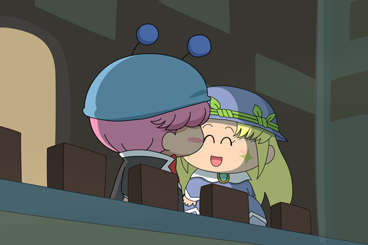

ムルアロ
成長してます
「はい。お父様がよろしくと言っていました」
「そうか、ムルモくんも楽しんでくれよ」
「はい！」
マルモの知り合いが毎年開くパーティにムルモは来ていた。
しかし、マルモとサリアが急用でこれなくなったため、ムルモが代わりに出席した。
「はぁ、パーティ疲れましたね…」
マルモから頼まれた人たちへ挨拶も終え、ジュースを一口飲む。
外へ出ていこうと思い、窓の近くへ向かう。
そこに懐かしい人物がいた。
「あれ、…アロマさん？」
「ムルモ様…！？ど、どうしてこちらに？」
「今日はお父様とお母様の代わりです」
「大変ですね」
「…ええ。僕外に出ようって思ってるんですけど、一緒にどうですか？」
「私も疲れていたんで…お言葉に甘えて」

外に出ると心地よい風が吹く。
「寒くないですか？」
「大丈夫です。部屋の中ちょっと暑すぎるぐらいだったから…」
「こうしてアロマさんと話すのも久しぶりですね」
「前はパピィさんとも遊んでたけど最近は家の方が忙しくて」
「大変ですね…」
「そういえばあの時本当に婚約してたらどうなってたんですかね」
「…どうでしょうかね？」
悪戯っぽくアロマは笑った。
アロマとは婚約者として出会った。
「そういえば婚約する日の夜あの時パピィと何か話してましたよね？」
「あれは内緒です。女の子同士の秘密の話」
「…いっつもそれですよね」
「ねえ、ムルモさん。さっき婚約の話しましたよね」
「どうかしたんですか？」
アロマは少し恥ずかしそうに眼を反らしたが、ムルモの目をしっかり見る。
「本当に婚約してたら久々に出会えた嬉しさってないって思うんです」
「…恥ずかしいですけど…僕も今日久々に会えて嬉しかったですよ」
「今度、また遊びましょうね？」
「さあ、そろそろ帰りましょう」
「そうですね」
アロマと並んで二人で会場へ戻っていく。
パーティ会場に戻るとちょうどダンスパーティへと変わったころだった。
「アロマさん、僕と踊りませんか？」
「はい」
ムルモはアロマの手を取った。
終わり
こやまるさんお誕生日おめでとうございます！
初ムルアロでした
CPというよりムルモ+アロマ…？
(2014/6/15)